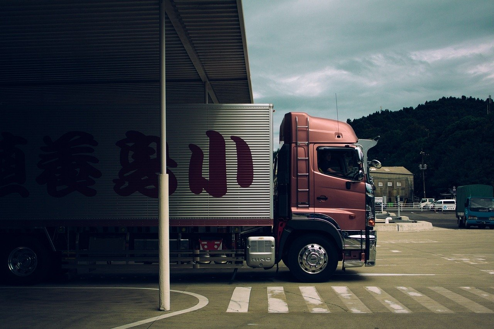

| ZOOM LTL FREIGHT |

GET A QUOTE: 1-800-333-SHIP
WHAT WE DO:
Zoom LTL Freight was founded in 1924 in Dublin, Ireland by the Kennedy Family who were produce dealers who realized that there was more success in delivering produce than selling it. The first Zoom truck was the family car with the rear seats removed. Today, Zoom is a billion euro plus powerhouse with nearly 70 terminals and offices in 12 European countries. Through our partner network, we serve the balance of Europe via LAND, SEA and AIR. With headquarters in Dublin, Zoom employs 1,050 people nationwide. Zoom LTL Freight has been recognized by the European Trucking Associations Safety Management Council for its outstanding safety record. We believe our mission statement says it all. At Zoom, we work to safely drive our customers' success with custom solutions built on the three pillars of our service-focused values: people, purpose and performance.
- Terminal Name: DUB - Dublin, Ireland
- Terminal Address: Zoom HQ, Dublin Port Offices, Dublin 1, Ireland
- Phone: 1-800-333-SHIP
- Hours: Mon-Fri 4:00AM - 5.30PM. Sat & Sun Closed
- Terminal Manager: Paula McGuinty
TESTIMONIALS:
"I have had the pleasure of working with Zoom LTL Freight since finding them while employed at a previous exhibit house. Their entire staff has always proved to be valuable allies in the daily transportation challenges related to the tradeshow business. Zoom provides excellent customer service and always works with our best interests at the forefront in whatever type of move they’re doing for us at the time."
Dave from CurateByDave.com
"We’ve worked with Zoom LTL Freight for a number of years. Service and quality keep us coming back. The staff is very responsive, either by phone or online, and takes excellent care of their clients. We ship low-volume but high value loads with very specific care & delivery demands – Zoom always delivers. It is a pleasure to work with such a quality company."
Mary from SeaSnacks
"Zoom LTL Freight is always there when we need something crazy, they give us honest and sound advice on shipments and are willing to go the extra mile in researching feasibility and the best way to make things happen."
Brian from BoulderRocks
"Zoom LTL Freight went above and beyond in helping secure the arrival of the product we shipped. They contacted British Airways directly and made sure that the shipment would make the flight and arrive on time."
Sally from Fleur Furniture